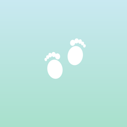

Doğumdan 2 yaşına bebek bakım takip uygulaması
Soru, geri bildirim veya önerileriniz için bize e-posta gönderin. Genellikle 1–2 iş günü içinde yanıt veriyoruz.
okkaracan@gmail.comBaby Care; bebeğinizin beslenme, uyku, bez, aşı takvimi ve ek gıda dönemini tek bir yerde, çevrimdışı ve gizliliğinizi koruyarak takip etmenizi sağlar.
Verilerim nerede saklanıyor?
Yalnızca cihazınızda. Hesap veya kayıt gerekmez. Tek istisna, varsayılan olarak kapalı olan ek gıda asistanıdır; onu açarsanız yalnız sorduğunuz soru ve bebeğin ay cinsinden yaşı gibi kimliksiz bilgiler gönderilir.
Verilerimi nasıl silerim?
Ayarlar → “Tüm Verileri Sıfırla” ile kalıcı olarak silebilir veya uygulamayı kaldırabilirsiniz.
Uygulama tıbbi tavsiye veriyor mu?
Hayır. Tüm içerik bilgilendirme amaçlıdır; kararlar için pediatristinize danışın.
Veri toplamayan, reklamsız bir uygulamayız; isteğe bağlı asistan dışında tamamen çevrimdışı çalışır.